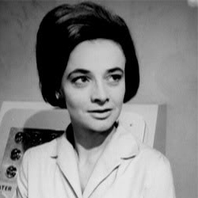

| Home | The Doctors | The Villains | |
|
|||
|
Barbara Wright is a fictional character in the British science fiction television series Doctor Who and a companion of the First Doctor. She was one of the programme's very first regulars and appeared in the bulk of its first two seasons from 1963–65, played by Jacqueline Hill. In the film version of one of the serials, Dr. Who and the Daleks (1965), Barbara was played by actress Jennie Linden, but with a very different personality and backstory, which includes her being a granddaughter of "Dr Who". Barbara appeared in 16 stories (74 episodes) Barbara Wright first appears in the first Doctor Who serial, An Unearthly Child (1963), where she is teaching history at Coal Hill School in London in 1963, working with science teacher Ian Chesterton (William Russell). They are curious about their studentSusan Foreman (Carole Ann Ford), who shows an unusually advanced knowledge of science and history, but a rudimentary knowledge of other subjects. In an attempt to learn more about Susan, Barbara and Ian follow her home to a junkyard, where they hear her voice coming from what appears to be a police box. During a confrontation with her grandfather, the Doctor (William Hartnell), Barbara rushes in to the police box, only to discover that its exterior hides the much larger interior of the TARDIS. After the Doctor reveals to Barbara and Ian that he and Susan are aliens exiled from their own planet, he tells them he cannot risk their revealing information about the TARDIS to their contemporary world, and dematerialises the craft against Susan's protests. At this point in the series the Doctor had no control over where or when it would land, making a return to London in 1963 impossible to co-ordinate. They are transported back in time to 100,000 BCE Earth, where they are captured by a prehistoric tribe seeking the secret of fire. Once they escape back to the TARDIS, their second trip takes them to the planet Skaro, where they encounter the Daleks for the first time. At the end of the first episode of that serial, Barbara becomes separated from her fellow travellers and is threatened by an unseen creature with a metal arm, marking the first appearance of a Dalek. |